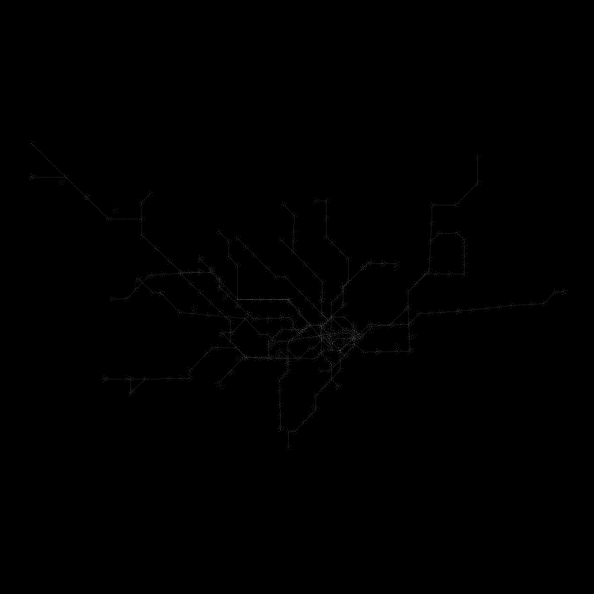
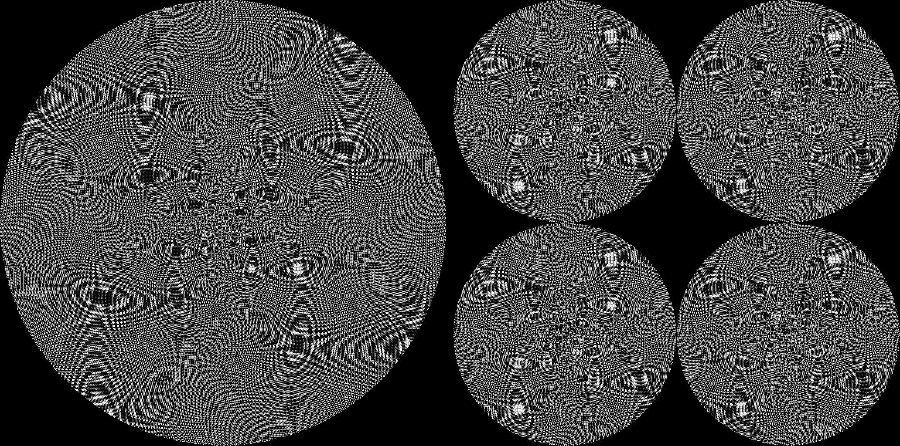

The London Underground, drawn from particles by a typed command
testcode 202609180120 · built 18 September 2026 · particle-physics-drawing-engine
The command is draw underground. The topology (11 lines, 341 stops, 314 edges) is read from Transport for London's open Unified API. The drawing is ours: every stop and every edge becomes the same same-sized particles, placed by a schematic law that pulls each edge towards one of eight compass directions. No map artwork is used. 6,327 particles.

Powered by TfL Open Data. Contains OS data © Crown copyright and database rights 2016 and Geomni UK Map data © and database rights 2019.The same particles under two laws. Left: one endless spiral, 262,144 addresses, r = √address, θ = address × golden angle. Right: a stack of four layers of 65,536 slots, each its own disc, angle by whole-number arithmetic that is exact within a layer. Same count, same size; only the law differs.

Both pictures are density rasters written by the scripts intools/; every number above is measured by the script that drew the picture. This page charts data and published facts; it is not a design tool.